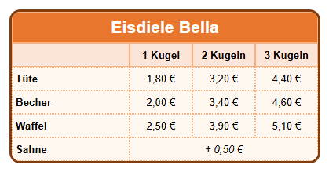

Lernpfad › Lektion 4
Rahmen und abgerundete Ecken

Zwei Arten von Rahmen
- Den Rahmen um die ganze Tabelle stellen Sie auf der Registerkarte
 Tabelle (T) ein: Rahmenfarbe,
Rahmenbreite, Rahmenstil und Rahmenradius (je größer die Zahl, desto runder die Ecken).
Tabelle (T) ein: Rahmenfarbe,
Rahmenbreite, Rahmenstil und Rahmenradius (je größer die Zahl, desto runder die Ecken). - Die Linien zwischen den Zellen: Ihre Dicke wählen Sie mit Gitterlinienbreite (Registerkarte Tabelle). Den Stil wählen Sie
pro Zelle mit Zellenrahmenstil auf der Registerkarte
 Zelle (C):
keiner, durchgezogen, gestrichelt, gepunktet oder doppelt.
Zelle (C):
keiner, durchgezogen, gestrichelt, gepunktet oder doppelt.
So machen Sie es selbst
- Erstellen Sie eine Tabelle mit 4 Spalten und 6 Zeilen. Verbinden Sie die Zellen der obersten Zeile (siehe Lektion 3) und geben Sie den Namen der Eisdiele ein.
- Tragen Sie die Sorten (Tüte, Becher, Waffel) und die Preise ein und formatieren Sie die Kopfzeile wie in Lektion 2.
- Wählen Sie auf der Registerkarte Tabelle als Rahmenfarbe Dunkelbraun und stellen Sie die Rahmenbreite auf 3.
- Stellen Sie den Rahmenradius auf 14: Die Ecken der Tabelle werden rund.
- Wählen Sie die Zellen mit den Sorten und Preisen aus (ziehen Sie darüber) und wählen Sie auf der Registerkarte Zelle als Zellenrahmenstil gepunktet.
- Sehen Sie sich das Ergebnis im Test-Browser an.
Ein passender Rahmen
Ein Rahmen hilft beim Lesen der Tabelle, aber zu viele Linien machen sie unruhig. Verwenden Sie einen dicken Rahmen um die Tabelle und dünne oder helle Linien innen. Wählen Sie eine Rahmenfarbe, die zur Farbe der Kopfzeile passt.
Aufgabe
Geben Sie der Tabelle einen doppelten Rahmen statt eines durchgezogenen. Stellen Sie danach den Eckenradius der Zellen auf 6 und sehen Sie im Test-Browser nach, was sich ändert.
Lösung
Wählen Sie auf der Registerkarte Tabelle als Rahmenstil doppelt. Ein doppelter Rahmen braucht etwas Breite: Lassen Sie die Rahmenbreite auf 3 oder mehr. Mit dem Eckenradius der Zellen bekommt jede Zelle eigene runde Ecken, sodass die Zellen wie kleine Knöpfe aussehen.
Arbeiten Sie unter Linux? Öffnen Sie das Beispiel dann selbst mit Tabellendesigner öffnen: Ordner
lessen/de, Datei les04-prijslijst.htd.